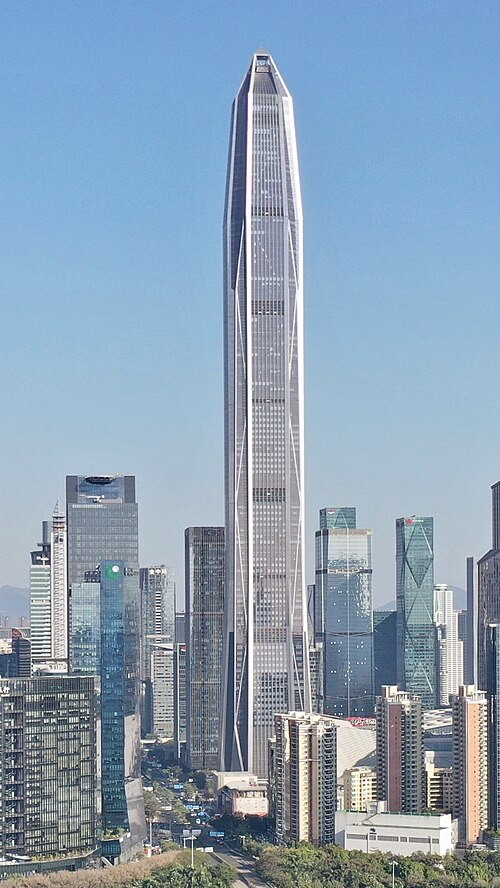

This map shows 15 of the most-searched sights in Shenzhen as photo spots, ranked by how often people search for them: Window of the World, Ping An Finance Centre, Splendid China, Huaqiangbei and Stock Exchange lead the list. Every spot has a pin on the subject and a phone icon showing where to stand, with tips for shooting it on your phone: which lens to use, how to frame it, a settings tip and the best time of day. Directions and Navigate buttons take you to the standing point on foot or by public transport. 3 spots are free to view; the full map is for members.
The 3 free photo spots
1Window of the World
Window of the World is a theme park in Shenzhen where about 130 world landmarks have been rebuilt as scale models, so you can photograph several continents in one afternoon. The centrepiece is the Global Square, with a one-third-size Eiffel Tower standing 108 metres tall. Other replicas include Angkor Wat, Christ the Redeemer, the pyramids of Giza, the Sydney Opera House and the Taj Mahal. There is also a Manhattan skyline and a version of Mount Fuji. The park began construction in 1991 and opened on 18 June 1994. It is now a national 5A-level tourist attraction and gets more than 3.25 million visitors a year.
It photographs well because the landmarks are bold, familiar shapes, often set against open sky or water, so they read clearly even on a small phone screen. The park is big, about 1.4 km across, so wander a little and look for clean angles rather than shooting the first thing you see. Keep people out of the edges of the frame if you want the model to look like the real thing, or put a friend in the foreground for a playful sense of scale. Stand back far enough to fit tall structures like the tower without tilting the phone steeply, which makes the sides lean inward.
Where it is: Window of the World is a large theme park in Shenzhen, China. The subject sits inside the park grounds.
Shooting it on your phone
Lens: Use the default lens (1x) for most landmark shots. Switch to the ultra-wide (0.5x) for the tall Eiffel Tower replica or for wide scenes, and to telephoto (2x-5x, depending on your phone) for details such as carvings and rooftops.
Where to stand: Stand right at the subject (plaza directly in front of the tower, facing it). The full Eiffel Tower replica framed from the open plaza in front of it, with warm light on the tower's stonework at golden hour. Shoot facing west so the models fill the frame.
Framing: Turn on gridlines and keep the tower's vertical line against a gridline so it stays straight. Use the ultra-wide (0.5x) from a low position if you want the full height, and leave some sky above. For a people shot, place your friend a few steps in front of the model and use portrait mode so the replica stays recognisable in the background.
Settings tip: Tap on the landmark to set focus, then slide the exposure down a touch if the sky is bright so the sky and stonework keep their detail. Live Photos are good for water features and moving crowds.
Best time: Morning or late afternoon usually gives softer, warmer light and less glare off pale stonework. If the park is open in the evening, night mode can work on lit structures; check the official site for times.
2Ping An Finance Centre

Ping An Finance Centre is the tallest building in Shenzhen. It has 115 storeys, stands 599.1 metres high and was completed in 2017. The tower is slim, about ten times taller than it is wide, and its stainless-steel facade reflects the sky. It was designed by the American firm Kohn Pedersen Fox and is the headquarters of Ping An Insurance. A public observation deck called Free Sky sits on floor 116. That distance suits a phone well. Tilt the phone upwards and the sides of the tower will lean inwards, so try to keep the phone as upright as you can and leave some space around the top of the building. Include a foreground such as a tree, a lamp post or a pedestrian crossing to give a sense of size. If you want a cleaner, more graphic picture, step back until the tower sits centrally and use the gridlines to keep the edges straight. A second, smaller tower stands beside it as part of the same complex, and it can add depth if it falls into your frame.
Where it is: In the Futian district, in Shenzhen's Central Business District. It is the tallest of the towers around it.
Shooting it on your phone
Lens: Use the ultra-wide (0.5x) to fit the whole tower from where you stand. The default lens (1x) works for the upper half or for a tighter, more graphic crop. Telephoto (2x-5x) is good for the pointed top and the facade pattern.
Where to stand: Stand in Deng Xiaoping Statue Square (Lianhuashan Park summit) (summit terrace; left side of the main upper terrace, shooting slightly down at the tower). The tower rises on the right of a wide Futian CBD panorama, with the Civic Center and other towers in the middle ground. About 5 minutes on foot from the tower base. Pick a spot with a clear sightline between the nearer buildings.
Framing: Turn gridlines on and line the tower up with a vertical line. Hold the phone as upright as you can so the sides do not lean in too much. Leave a little sky above the top. Add a foreground like trees or a street feature for scale. Try a portrait-orientation shot first, then a wider landscape version that includes the neighbouring towers.
Settings tip: Tap on the facade to set focus, then slide the exposure down a little so the bright sky does not wash out the metal. After dark, use night mode and rest your elbows against a wall or railing to keep the phone steady.
Best time: Late afternoon to dusk, when the facade can pick up warm light and the building lights come on. Blue hour gives a good balance between sky and lit windows.
3Splendid China Folk Village
Splendid China Folk Village is a theme park beside Shenzhen Bay. It has two parts: a miniature park and a folk culture village. More than 100 major sights from across China have been rebuilt as models and laid out roughly according to the map of China. Most are at about 1:15 scale. The Great Wall, the Forbidden City, the Temple of Heaven, the Summer Palace, the Three Gorges Dam, the Potala Palace and the Terracotta Army are among them. The whole park covers about 30 hectares, so it is large, and cars and trains run between areas.
For a phone photographer the appeal is the play of scale. Close up, a model temple or wall section can look like the real thing, and a person standing beside it shows the trick at once. The park is big, so choose one or two models you like rather than trying to cover everything. Walk up to a model, crouch so your phone is near its base, and shoot level with it. Keep the background simple so the model looks full-size. For a wider view, step back and include the paths and planting around it. Save a few frames for the shows and the folk village if they are running, as they add people and colour. Photo rules can vary inside parks like this, so follow any signs.
Where it is: In Shenzhen's Overseas Chinese Town (OCT) tourist area, beside Shenzhen Bay, within the Shenzhen Special Economic Zone.
Shooting it on your phone
Lens: Start with the default lens (1x) for single models. Switch to the ultra-wide (0.5x) for a whole group of models with the sky behind. If your phone has telephoto (2x-5x), use it to pick out roof details and to flatten the background.
Where to stand: Stand on 风雨桥 (Wind and Rain Bridge) (lakeside approach, facing the Cui Lake performance area). The covered wooden bridge in the foreground, with the lit lake and performance area behind it, especially during the evening show. Then walk on to other models you like.
Framing: Crouch so the phone is level with the base of a model, and keep other visitors and signs out of the frame so the scale looks real. Turn on gridlines to keep rooflines and walls straight. For a wider view, step back and use 0.5x, but keep the edges clear of bins and railings.
Settings tip: Tap on the model to focus, then drag the exposure slider down slightly if the sky is bright, so the stonework keeps its detail. Portrait mode can blur the background behind a close model, but check that the edges look clean.
Best time: Choose a time when the park is open and the light is softer, such as morning or late afternoon, rather than the harsh midday sun.
12 more spots for members
These spots are on the map as grey numbered pins. Where to stand, the phone tips, photos and directions for them come with Explorer membership.
- 4Huaqiangbei · members
- 5Shenzhen Stock Exchange · members
- 7Lianhuashan Park · members
- 8Shenzhen Museum · members
- 9Shenzhen Convention and Exhibition Center · members
- 10Shenzhen Museum of Contemporary Art and Urban Planning · members
- 11Shenzhen Civic Center · members
- 12Shenzhen Library · members
- 13KK100 · members
- 14Shun Hing Square · members
- 15Shenzhen Grand Theater · members
- 17Shenzhen Special Zone Press Tower · members
Get every spot with Explorer membership
Explorer opens every spot on every map in the library: where to stand, how to frame it on your phone and how to get there, plus the Xdatrys Maps app with maps saved on your phone for use without signal. $9.99 a month or $59.99 a year; cancel any time.
Join Explorer Compare free and Explorer
Not ready to join?
Get Pocket Lens, our free daily smartphone travel photography newsletter.
Free, and you can unsubscribe at any time. If the form does not show, sign up on our newsletter page.
Questions
What are the top photo spots in Shenzhen?
The first three on this map are Window of the World, Ping An Finance Centre and Splendid China. They are ranked by how often people search for them. The full map has 15.
Where should I stand to photograph Window of the World?
Stand right at Window of the World (plaza directly in front of the tower, facing it). Use the default lens (1x) for most landmark shots.
When is the best time to photograph Ping An Finance Centre?
Late afternoon to dusk, when the facade can pick up warm light and the building lights come on. Blue hour gives a good balance between sky and lit windows.
How do I get to Splendid China?
No metro station is listed for this spot, so head for the Overseas Chinese Town (OCT) area by Shenzhen Bay.
Credits
Map data © OpenStreetMap contributors (ODbL); base map built with Protomaps from OpenStreetMap data. Photos from Wikimedia Commons, credited under each photo with their licence. Background reading for the free spots: Window of the World, Ping An Finance Centre, Splendid China Folk Village (Wikipedia, CC BY-SA). Access rules and opening times change: check before you go.